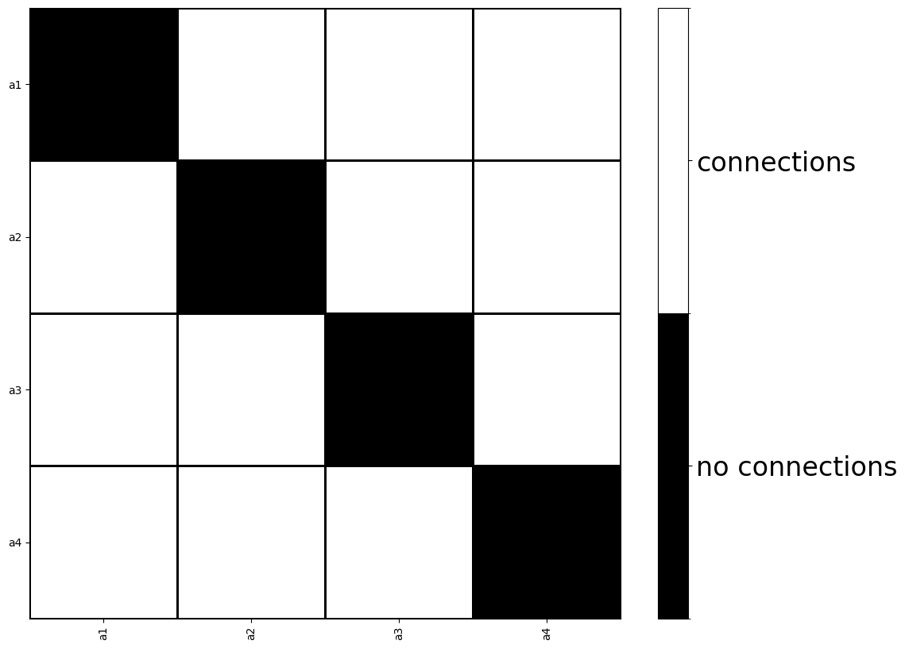
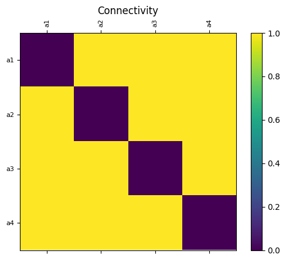
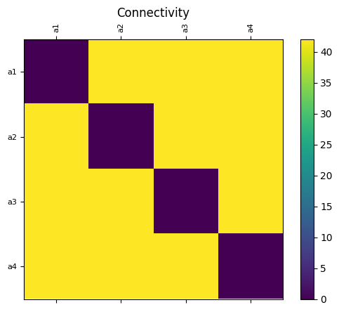
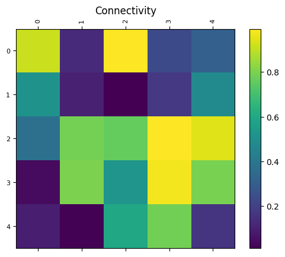
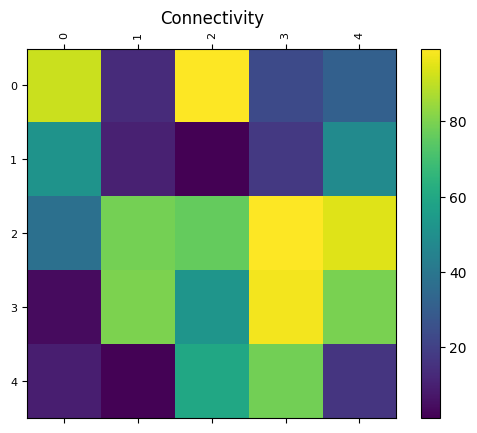

December 20, 2022: The Virtual Brain (TVB) tutorial
December 20, 2022: The Virtual Brain (TVB) tutorial¶
import numpy as np
from tvb.simulator.lab import *
import tvb.simulator.lab as tsl
/home/govindas/venvs/nw_estim/lib/python3.9/site-packages/tvb/datatypes/surfaces.py:64: UserWarning: Geodesic distance module is unavailable; some functionality for surfaces will be unavailable.
warnings.warn(msg)
# Create empty connectivity
wm = connectivity.Connectivity()
# First weights and distances
nor = 4
wm.motif_all_to_all(number_of_regions=nor)
# Centers, specify the number of regions, otherwise it'll use a default value.
wm.centres_spherical(number_of_regions=nor)
# By default, the new regions labels are numeric characters, ie [0, 1, ...]
wm.create_region_labels(mode='alphabetic')
# But custom region labels can be used
wm.region_labels = np.array('a1 a2 a3 a4'.split())
wm.configure()
# plot_matrix(wm.weights, connectivity=wm, binary_matrix=True)
plot_matrix(wm.weights, connectivity=wm, binary_matrix=True)

tsl.plot_connectivity(
wm,
num='weights'
)


wm = tsl.connectivity.Connectivity()
wm.number_of_regions = 5
wm.weights = np.random.rand(5, 5)
wm.centres_spherical(number_of_regions=5)
wm.region_labels = np.array([0, 1, 2, 3, 4])
wm.tract_lengths = 100 * wm.weights
wm.configure()
tsl.plot_connectivity(
wm,
)


wm = tsl.connectivity.Connectivity.from_file()
wm
ERROR Could not import tvb_data Python module for default data-set!
Traceback (most recent call last):
File "/home/govindas/venvs/nw_estim/lib/python3.9/site-packages/tvb/basic/readers.py", line 226, in try_get_absolute_path
module_import = importlib.import_module(relative_module)
File "/home/govindas/miniconda3/lib/python3.9/importlib/__init__.py", line 127, in import_module
return _bootstrap._gcd_import(name[level:], package, level)
File "<frozen importlib._bootstrap>", line 1030, in _gcd_import
File "<frozen importlib._bootstrap>", line 1007, in _find_and_load
File "<frozen importlib._bootstrap>", line 972, in _find_and_load_unlocked
File "<frozen importlib._bootstrap>", line 228, in _call_with_frames_removed
File "<frozen importlib._bootstrap>", line 1030, in _gcd_import
File "<frozen importlib._bootstrap>", line 1007, in _find_and_load
File "<frozen importlib._bootstrap>", line 984, in _find_and_load_unlocked
ModuleNotFoundError: No module named 'tvb_data'
---------------------------------------------------------------------------
FileNotFoundError Traceback (most recent call last)
Cell In[6], line 1
----> 1 wm = tsl.connectivity.Connectivity.from_file()
2 wm
File ~/venvs/nw_estim/lib/python3.9/site-packages/tvb/datatypes/connectivity.py:740, in Connectivity.from_file(cls, source_file)
737 result.tract_lengths = reader.read_field("tract_lengths")
739 else:
--> 740 reader = ZipReader(source_full_path)
741 result = cls._read(reader)
743 return result
File ~/venvs/nw_estim/lib/python3.9/site-packages/tvb/basic/readers.py:165, in ZipReader.__init__(self, zip_path)
162 def __init__(self, zip_path):
164 self.logger = get_logger(__name__)
--> 165 self.zip_archive = zipfile.ZipFile(zip_path)
File ~/miniconda3/lib/python3.9/zipfile.py:1239, in ZipFile.__init__(self, file, mode, compression, allowZip64, compresslevel, strict_timestamps)
1237 while True:
1238 try:
-> 1239 self.fp = io.open(file, filemode)
1240 except OSError:
1241 if filemode in modeDict:
FileNotFoundError: [Errno 2] No such file or directory: 'connectivity_76.zip'